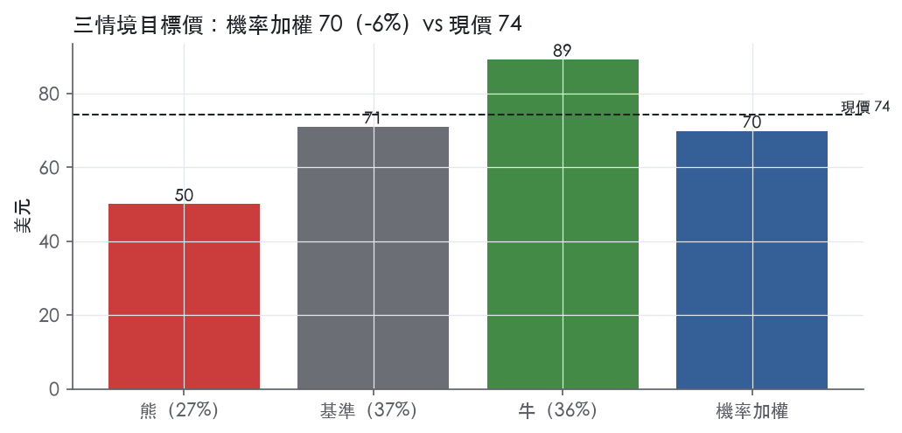
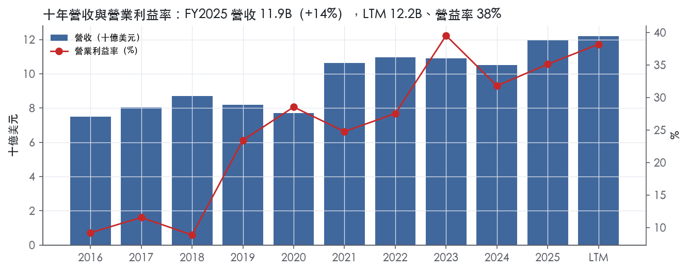
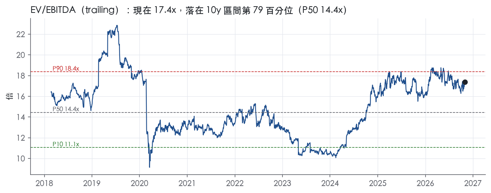
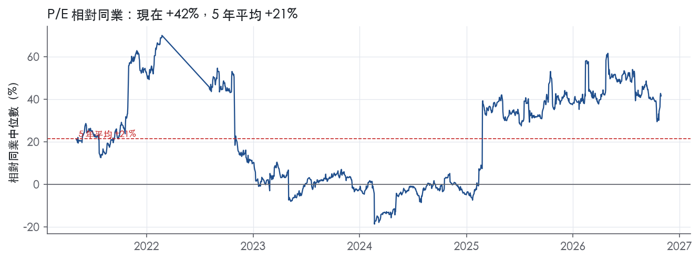
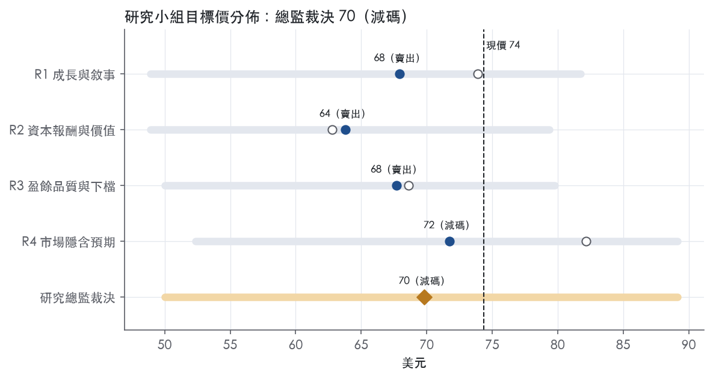
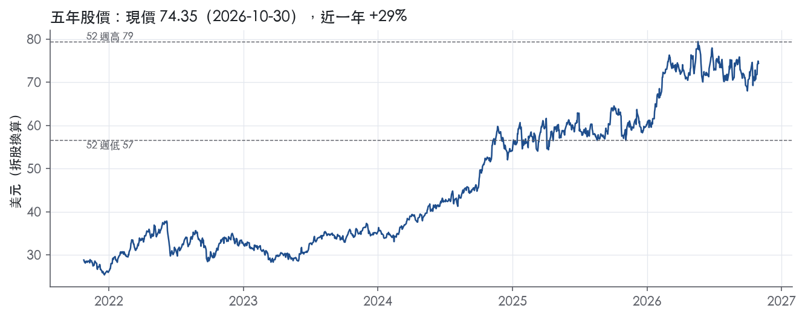

評等總表 › 能源 › WMB
倍數部分回吐，相對同業看空｜評等 減碼｜目標價 70
| 評等 | 減碼（邊界，鄰近賣出） |
| 12 個月目標價 | 70 美元 |
| 現價 | 74.35 美元（2026-10-30） |
| 預期報酬 | 股價 -6.1%＋股息 2.8%＝總報酬 -3.3%；同業籃門檻 10.0%，超額 -13.3% |
| 估值方法 | EV/EBITDA 16.5x，套在未來四季的EBITDA |
| 三情境 | 熊 50／基準 71／牛 89 |
| 研究流程 | 四位研究員兩輪辯論＋研究總監裁決 |
| 資料來源 | SEC EDGAR XBRL、Tiingo、FRED（全免費） |
倍數部分回吐，相對同業看空（研究總監裁決，四位研究員兩輪辯論後）
評等 減碼（邊界，鄰近賣出）｜12 個月目標價 70 美元（總監三情境機率加權 72 與研究員中位數 68 各半）｜現價 74.35（2026-10-30）
預期報酬：股價 -6.1%＋股息 2.8%＝總報酬 -3.3%。同業籃門檻 10.0%，超額 -13.3%，離賣出的分界不到三個百分點，屬邊界評等（落在其他級距的機率約四成）。
估值方法：EV/EBITDA 16.5x，套在未來四季的EBITDA。三情境：熊 50（27%）／基準 71（37%）／牛 89（36%）。
什麼會讓研究總監改變看法：3Q26 新聞稿顯示剔除衍生工具與處分利得後單季營益率仍在 38% 以上，且 2027 財測中位數 ≥9.0B 並揭露 Momentum 以債務融資而公司口徑槓桿 ≤4.0x，我把倍數上調到 17.4x、轉中性；Adjusted 與 GAAP EBITDA 對帳若顯示權益法比例 EBITDA 占比明顯高於同業，溢價回吐的論點減弱，同樣上調。
| 過去四季（實際，FY2026Q2） | 未來四季 | 第 5–8 季 | 第 9–12 季 | |
|---|---|---|---|---|
| 營收（B） | 12.2B | 13.4B | 14.6B | 15.6B |
| 營收成長 | 8.7% | 9.5% | 9.0% | 7.0% |
| 營業利益率 | 38.2% | 36.0% | 35.5% | 34.5% |
| EPS（美元） | 2.51 | 2.09 | 2.32 | 2.44 |
| EPS 成長 | 26.3% | -16.6% | 10.8% | 5.5% |
| 每股股息（美元） | 2.05 | 2.05 | 2.05 | 2.05 |
| P/E（現價） | 29.6x | 35.5x | 32.1x | 30.4x |
| 股息殖利率（現價） | 2.8% | 2.8% | 2.8% | 2.8% |
過去四季為申報數字；預測為研究總監的假設、程式計算。倍數與殖利率都用現價計算，用來看現價對應各期獲利的高低。
| 情境 | 機率（歷史） | 故事 | 未來四季營收成長 | 第 5–8 季營益率 | 倍數 | 目標價 | 股價漲跌 |
|---|---|---|---|---|---|---|---|
| 熊 | 27%（27%） | 風險表第 1 條（Socrates 二期未在 4Q26 完工、2027 成長資本支出不降）加乘第 5 條（Momentum／LNG 走廊貢獻落後、2026 Adj. EBITDA 低於 8.4B）；固定成本去槓桿與 O&A 上升，本行下行路徑利差 2.30 推高再融資成本、利息保障跌破 3x，倍數退回 5 年 P50 | 4.0% | 34.0% | 14.2x | 50 | -32.7% |
| 基準 | 37%（37%） | 合約成長兌現、2026 Adj. EBITDA 達 8.4B 中點、乾淨利潤率約 36%，淨負債隨資本支出高峰上升，個股溢價自 36.6% 回到約三成 | 9.5% | 35.5% | 16.5x | 71 | -4.6% |
| 牛 | 36%（36%） | LTM 利潤率證明是常態、Power Innovation 再簽案、2027 財測中位數 ≥9.0B，市場續付 1 年／10 年 P90；本行上行路徑降低高峰期融資成本 | 12.0% | 38.0% | 18.4x | 89 | 19.9% |
目標價由程式依研究總監的驅動與倍數計算；機率由研究總監給定。括號內是歷史頻率：把這檔股票過去十年 12 個月報酬的波動形狀，置中在基準情境，結果落在各情境附近的比例。

四位研究員用不同方法各自估值，回應研究總監的質疑後交出第二輪，最後由總監逐點裁決。各研究員的主張見第七章，裁決理由見第八章，完整論證見《研究底稿》。
| 立場（一輪→二輪） | 加權目標價（一輪→二輪） | 評等（一輪→二輪） | 第二輪倍數 | 熊～牛目標價 | |
|---|---|---|---|---|---|
| R1 成長與敘事 | 看空→看空 | 74→68 | 減碼→賣出 | 16.5x | 49～82 |
| R2 資本報酬與價值 | 看空→看空 | 63→64 | 賣出→賣出 | 15.5x | 49～79 |
| R3 盈餘品質與下檔 | 看空→看空 | 69→68 | 減碼→賣出 | 16.5x | 50～80 |
| R4 市場隱含預期 | 看多→看空 | 82→72 | 中立→減碼 | 16.5x | 52～89 |
| 研究總監裁決 | 看空 | 70 | 減碼 | 16.5x | 50～89 |
目標價由程式依各自的驅動與倍數計算；評等＝機率加權總報酬 − 同業籃門檻。
Williams 是一家以州際天然氣運輸、天然氣集輸處理、NGL 分餾儲存及天然氣／NGL 行銷為核心的中游能源基礎設施公司。公司在11個供應區營運天然氣集輸處理（G&P）、運輸儲存服務、NGL分餾、運輸與儲存服務，以及行銷服務，服務約800名客戶，擁有並營運超過32,000英里管線（跨24州及墨西哥灣）、35座天然氣處理廠、9座NGL分餾廠、約2,300萬桶NGL儲存容量，以及423 Bcf天然氣儲存容量¹。公司創立於1908年，現為特拉華州公司，總部在Tulsa, Oklahoma，股票在紐約證交所交易，代號WMB¹。下游客戶涵蓋州際管線的地方配氣公司、公用事業、市政機構、直接工業用戶、發電業者及天然氣行銷商／生產商¹。LTM營收12.20B美元、EBITDA 6.99B美元，公司本質上是一家受FERC監管、現金流穩定、以長約（MVC、take-or-pay）鎖定收入的基礎設施公司。
Williams以CODM視角劃分四個可報告分部：Transmission, Power & Gulf、Northeast G&P、West、Gas & NGL Marketing Services，其餘歸入Other（含上游業務與公司活動）¹。Transmission, Power & Gulf為最大分部，涵蓋Transco（約9,600英里州際管線，自德州、路易斯安那延伸至紐約都會區）、NWP（約3,900英里，自新墨西哥延伸至加拿大邊境華盛頓州Sumas）、MountainWest（約2,200英里）、Gulf離岸集輸與原油運輸資產，以及Gulf Coast Storage與NorTex市場化費率儲存資產¹。該分部2Q26 Modified EBITDA為959M美元，年增68M美元；2Q26 Adjusted EBITDA為959M美元，年增56M美元²。Northeast G&P聚焦Marcellus及Utica頁岩區（賓州、西維吉尼亞、紐約、俄亥俄），2Q26 Modified EBITDA 540M美元，年增39M美元²。West分部涵蓋Wamsutter、Piceance、Barnett、Eagle Ford、Haynesville、DJ Basin等集輸系統，2Q26 Modified EBITDA 359M美元，年增18M美元，主要受Louisiana Energy Gateway（2025年第三季投產）及2025年Rimrock、Saber收購貢獻的集輸量成長驅動²。Gas & NGL Marketing Services負責天然氣與NGL的資產管理、批發行銷、交易、儲存與運輸，2Q26 Modified EBITDA 123M美元（主要受商品衍生工具未實現利益變動124M美元影響）²。各分部對集團總營收與EBITDA的具體百分比占比，10-K未揭露。公司2025年NGL生產約93%在收費型合約下，另約7%為noncash commodity-based合約（keep-whole、percent-of-liquids）¹。
Williams的客戶結構高度集中但受合約保護，前十大G&P客戶占該業務收費收入及商品型合約NGL利潤約55%，Transco前十大客戶占其受監管州際運輸儲存收入約44%，NWP前三大客戶占其總營收約52%¹。2025年天然氣集輸處理服務約253名客戶，大部分G&P與州際運輸合約為長期（月約到井齡不等），部分含MVC條款，客戶信用風險因服務發生在井口、對生產商具關鍵性而顯著降低¹。行銷業務的NGL端客戶集中度較高，前三大NGL行銷客戶占NGL行銷銷售約42%，天然氣行銷前三大客戶僅占約8%¹。地理上公司營運完全位於美國，核心走廊為墨西哥灣（離岸集輸與原油運輸）、東南岸／大西洋沿岸（Transco覆蓋喬治亞、華盛頓特區、馬里蘭、北卡、紐約、紐澤西、賓州等主要都會區）、阿帕拉契（Marcellus/Utica）及西部（懷俄明、科羅拉多、德州頁岩區）¹。公司特別強調東南與墨西哥灣沿岸是美國成長最快的天然氣需求區域，並藉由2025年10月取得的Louisiana LNG（10%權益法投資）與Driftwood Pipeline（80%權益）布局LNG出口走廊¹。通路上公司以FERC監管的長期固定運費保留合約（firm reservation contracts）為主，搭配短期可中斷運輸及儲存服務作補充¹。
過去四季Williams呈現營收與EBITDA同步成長、資本支出大幅上升的態勢。FY2025Q3營收2.92B美元，年增10.2%，營益率37.9%。FY2025Q4營收3.20B美元，年增16.6%，但FCF轉負至-0.38B美元。1Q26公司公布創紀錄季度業績：GAAP淨利864M美元、每股0.70美元，年增25%；調整後EBITDA 2.254B美元，年增265M美元或13%；CFFO 1.603B美元，年增170M美元或12%；AFFO 1.770B美元，年增325M美元或22%；股息保障率2.76倍（AFFO基礎）³。公司當時維持2026年Adjusted EBITDA指引在8.05–8.35B美元區間，預期2026年成長型資本支出7–7.6B美元、維護資本支出850–950M美元，年化股息自2025年2.00美元上調5%至2026年2.10美元³。2Q26延續強勁動能：GAAP淨利827M美元、每股0.68美元，年增51%；調整後EBITDA 1.921B美元，年增113M美元或6%；CFFO 1.376B美元（因Transco於4月支付費率退款而年減74M美元）；AFFO 1.450B美元，年增133M美元或10%；股息保障率2.26倍²。公司將2026年Adjusted EBITDA指引中位數上調200M美元至8.4B美元，反映Momentum Midstream收購案的貢獻²。資料包顯示FY2026Q1營收3.03B美元（年減0.6%），FY2026Q2營收3.05B美元（年增9.8%），兩季FCF分別為0.24B美元與-0.46B美元，反映公司在成長資本支出高峰期間現金流波動加大。
公司將自身定位為「致力於成為安全提供基礎設施以可靠地為清潔能源經濟輸送天然氣產品的領導者」¹。CEO Chad Zamarin指出，成長動能來自「Transco的擴建專案、新的Gulf產量、更高的儲存收入及西部更高的集輸量」³。公司明確將Power Innovation平台列為新成長引擎，強調其「持續擴大規模，因客戶尋求快速、可靠且可擴充的方案以滿足不斷成長的電力需求」，並以Socrates一期專案按時按預算完成、與Blackstone完成合資（注入5.34B美元低成本資本）作為「最佳執行力」的證明²。公司同時強調透過收購Momentum Midstream「在全國最重要的LNG需求走廊中強化地位」，並搭配LEG集輸系統擴建與Transco走廊大型take-or-pay管線專案²。公司總結策略為「能同時執行多項成長機會」，包括「擴大已簽約專案組合、投資高回報機會、維持財務實力與靈活性」，以支撐「更高的長期成長目標」²。公司也將LNG出口（Louisiana LNG／Driftwood Pipeline）與資料中心／工業用電驅動的Power Innovation專案（如Ohio、Utah合計1.9吉瓦產能，最長12.5年主要固定價格合約）列為明確成長引擎¹。整體來看，Williams的成長敘事已從傳統管線運量擴張，轉向「LNG出口配套＋資料中心用電」雙軌加速，Momentum Midstream收購進一步鞏固其在Haynesville-墨西哥灣LNG走廊的戰略卡位。這套策略高度仰賴長期take-or-pay／MVC合約鎖定現金流，但同時也意味著成長資本支出將維持高檔，FCF在可預見的幾個季度內可能持續承壓。投資人應關注Power Innovation合資（Blackstone）能否如期將重資本支出轉為合約化EBITDA，以驗證指引上修的可信度。

按本部定義，Williams 評為「無」護城河。我們沒有把握它未來 5 年的 ROIC 能高於資本成本，因為過去 9 年它一次都沒做到。Williams 的進入障礙是真的：FERC 證照、走廊路權、長期保留合約都存在。但這些障礙保護的是「量」和「存續」，沒有保護「超額報酬」。FERC 費率機制把報酬率鎖在核准水準，歷年併購又墊高投入資本，所以障礙沒有轉成高於資本成本的回報。趨勢判為變寬，依據是 ROIC 從低點 1.5% 回升到 7.9%，與資本成本的差距在收斂。
Williams 有三類可驗證的結構性優勢：無形資產（監管授權）、效率規模、轉換成本。
成本優勢與網路效應都找不到具體證據，不列。
數字看不到寬或窄護城河應有的超額報酬，這是本章評級的決定性證據。
最大的侵蝕風險是高峰期資本支出的回報率；其次是費率重審與 G&P 對鑽井活動的依賴。
護城河評級不支持給 Williams 高於同業的目標倍數，建議相對同業持平。長約與監管授權讓現金流可預期，這是不需要折價的理由；但 ROIC 從未越過資本成本，超額報酬無法延續，所以也不能溢價。目前 EV/EBITDA 位於 5 年分位 83.1%，高於 5 年中位數 14.2x；在 ROIC 實際越過資本成本之前，不應用護城河當理由去追更高的倍數。
| 指標 | 最新 | 十年平均 | 標準差 | 最低 | 最高 |
|---|---|---|---|---|---|
| ROIC | 7.9% | 5.6% | 2.4% | 1.5% | 9.4% |
| 營業利益率 | 35.1% | 24.0% | 10.3% | 8.8% | 39.5% |
| FCF 利潤率 | 8.4% | 19.8% | 9.9% | 0.4% | 31.4% |
| ROE | 20.7% | 14.8% | 10.3% | -1.3% | 30.4% |
程式計算。資本成本代理值（10 年債＋5%）：10.0%；ROIC 平均減資本成本：-4.4%；ROIC 有資料的 9 年中，高於資本成本 0 年。
LTM 營業現金流／淨利 1.95x、近三年平均 2.12x，盈餘有實際現金流入支撐。但自由現金流／淨利 LTM 為 -0.04x，紅燈，淨負債／EBITDA LTM 4.37x 同樣紅燈，利息保障倍數 3.13x 僅在黃燈邊緣。這些紅旗多數可歸因於正在加速的成長型資本支出與處分利得推升的 GAAP 淨利，屬於可解釋但不可忽略的體質弱點，因此評等為中，不給高分。
LTM 自由現金流為 -0.11B，對應淨利仍為正、EPS 2.51，兩者方向背離。拆開看最近兩季：FY2025Q4 FCF -0.38B、FY2026Q2 FCF -0.46B（最近八季表），而同期資本支出明顯跳升——2Q2026 資本投入（不含收購）為 $1,642M，去年同期僅 $1,039M²。這是 Power Innovation（資料中心供電）等成長專案在建期的正常現象，不是營運現金流本身惡化：2Q2026 CFFO 為 $1,376M，去年同期 $1,450M，年減主因是 Transco 費率退款在 4 月支付造成營運資金不利變動，而非盈餘品質轉差²。FY2025 全年 CFO 仍有 5.90B、資本支出佔營收比重拉高到 40.9%（年度摘要表），顯示 FCF 的壓力是投資週期的結果而非應計操縱。應計比率 LTM -4.9%、近三年平均 -5.5%，遠低於 5.0% 紅線，顯示盈餘沒有被應計項目灌水，反而現金流通常優於帳列淨利。十年平均 CFO／NI 僅 0.26x 這個數字會誤導人——FY2016（淨利 -0.42B）與 FY2018（淨利 -0.15B）兩年淨利為負但 CFO 仍分別達 4.16B、3.29B（年度摘要表），負值淨利讓比率在這些年度變成大幅負數，拖垮十年平均，這是算術上的扭曲，不代表近年現金轉換能力變差。
2Q2026 GAAP 淨利 $827M（EPS $0.68）比調整後淨利 $614M（調整後 EPS $0.50）高出可觀幅度，上半年 GAAP 淨利 $1,691M 也比調整後 $1,509M 高²。主要差異來自兩筆處分利得：2026 年 6 月出售 Brazos Permian II 股權投資產生 $126M 淨利得，以及今年初出售 South Mansfield 上游權益產生的 $194M 利得（計入上半年）²。調整後數字也剔除商品衍生工具未實現損益的波動（本季為有利 $106M 變動，上半年為不利 $87M 變動）²。這兩類剔除項目——資產出售利得與衍生工具按市值計價的未實現損益——都是真的一次性或非經常性項目，應該從常態盈餘中剔除才能反映可持續的經營獲利能力。SBC／營收僅 0.7%，公司並未靠股權薪酬膨脹非 GAAP 盈餘，這點是乾淨的。公司另外揭露 AFFO（可分配現金流）$1,450M 及股利覆蓋率 2.26x²，這組指標比 GAAP 淨利更貼近管理層實際用來衡量配息能力的口徑，但它同樣不是 GAAP 數字，估值時不能直接當作「盈餘」替代。
淨負債 30.59B、企業價值 121.67B，對應量化底稿 LTM 淨負債／EBITDA 4.37x，近三年平均同為 4.37x，十年平均卻達 6.02x，顯示公司目前的槓桿其實已比歷史均值改善，但仍遠高於 ≤1.5x 的綠燈門檻。公司自揭的「Debt-to-Adjusted EBITDA」口徑為 3.67x（扣現金與部分可報銷長交期設備採購），比量化底稿略低，差異主要是分母用 Adjusted EBITDA、分子淨現金調整範圍不同所致，兩者方向一致，都確認槓桿偏高是真實狀況而非計算假警報²。利息保障倍數 LTM 3.13x、近三年平均 2.95x，均低於 8x 綠燈線、貼近 3x 紅線，反映高槓桿正在吃掉付息緩衝。資本配置方面，（股利＋回購）／淨利 LTM 81.5%、近三年平均 90.0%，顯示公司持續把大部分盈餘回饋股東，同時稀釋股數年變動僅 -0.1%，沒有稀釋式增發的問題。值得注意的是公司用聯合開發模式降低自身資本負擔：與 Blackstone 成立 Power Innovation 合資，引入 $5.34B 低成本資本挹注近期成長專案²，這能在不進一步推高 WMB 自身資產負債表槓桿的前提下支持成長資本支出，是對沖槓桿紅旗的正面因子。
估值應以調整後（Adjusted）盈餘與 AFFO 為主要錨點，GAAP EPS 2.51含有 Brazos Permian II 與 South Mansfield 兩筆合計約 $320M 的資產處分利得，不具重複性，應先剔除再估值。現金轉換本身健康（CFO/NI 1.95x），不需要因盈餘品質本身打太重的折扣，但淨負債／EBITDA 4.37x 與利息保障 3.13x 的組合應該限制可接受的 EV/EBITDA 倍數上緣，目前 trailing EV/EBITDA 17.4x 已處於五年 83 百分位（band 表），槓桿風險未被市場完全定價，建議估值時對倍數採取保守而非上緣假設。歷史淨利率跳動因原文佐證不足仍是未解之紅旗，若後續查證顯示是減值等真實一次性項目，不影響前瞻估值；若屬口徑或分類變動,則應在長期獲利能力假設上更謹慎。
| 項目 | LTM | 近三年 | 十年 | 燈號 | 規則 |
|---|---|---|---|---|---|
| 營業現金流／淨利 | 1.95x | 2.12x | 0.26x | 綠 | ≥1.00x 綠、<0.80x 紅 |
| 自由現金流／淨利 | -0.04x | 0.85x | 1.33x | 紅 | ≥0.90x 綠、<0.60x 紅 |
| 應計比率（(淨利−CFO)／平均總資產） | -4.9% | -5.5% | -5.6% | 綠 | ≤0.0% 綠、>5.0% 紅 |
| SBC／營收 | 0.7% | 0.8% | 0.8% | 綠 | ≤3.0% 綠、>8.0% 紅 |
| 淨負債／EBITDA | 4.37x | 4.37x | 6.02x | 紅 | ≤1.50x 綠、>3.00x 紅 |
| 利息保障倍數（營業利益／利息） | 3.13x | 2.95x | 1.93x | 黃 | ≥8.00x 綠、<3.00x 紅 |
| 稀釋股數年變動 | -0.1% | 0.1% | 5.9% | 綠 | ≤0.0% 綠、>3.0% 紅 |
| （股利＋回購）／淨利 | 81.5% | 90.0% | 49.3% | 綠 | ≥50.0% 綠、<0.0% 紅 |
| 存貨成長 − 營收成長（FY2025） | -1.2pp | — | — | 綠 | ≤5pp 綠、>15pp 紅 |
程式計算；燈號以 LTM（無則近三年平均）判定。
| 風險 | 觸發指標（看什麼數字、在哪裡看） | 對 EPS 的影響方向與粗略幅度 | 未來 12 個月發生機率（高／中／低） | 出處 |
|---|---|---|---|---|
| 1. 成長資本支出高峰期FCF轉負，Power Innovation／LNG專案能否如期轉化為合約化EBITDA | 季度FCF（資料包dv.fcf）、2026年成長資本支出指引7–7.6B美元達成度（8-K）、Debt-to-Adjusted EBITDA（現為3.67x） | 方向：負向；FY2025 FCF已降至1.00B，LTM FCF為-0.11B；2Q26與4Q25單季FCF分別為-0.46B、-0.38B | 高 | ³＋量化底稿 |
| 2. 客戶集中度：州際管線與G&P前十大客戶占比高，若單一大客戶信用惡化或合約到期不續約 | NWP前三大客戶營收占比（52%）、Transco前十大客戶占比（44%）、G&P前十大客戶占比（55%）——季報若揭露客戶流失或MVC違約 | 方向：負向；公司未給具體金額但占比集中度高，影響屬「大」 | 中 | 10-K 年報 FY2025 Item 1（業務） |
| 3. FERC費率案結果不如預期（Transco 2030年前須再提新費率案、NWP 2028年前須提案） | Transco/NWP下一輪NGA Section 4費率案申報與FERC裁決結果、退款準備金變動 | 方向：負向；2025年Transco費率案已和解生效2026/3/1，但NWP最近一次退款達126M美元（含利息），顯示費率案可造成一次性現金流出 | 中 | 10-K 年報 FY2025 Item 1（業務） |
| 4. 商品價格與衍生工具公允價值波動（Gas & NGL Marketing分部） | 季度「商品衍生工具未實現利益/損失」變動（8-K揭露）、NGL與天然氣價格 | 方向：雙向；2Q26單季因未實現利益變動+106M美元挹注淨利，YTD卻為-87M美元，波動性本身即是風險 | 中 | 8-K 財報新聞稿（2026-08-03） |
| 5. 併購整合風險（Momentum Midstream、Louisiana LNG/Driftwood）無法如期產生承諾現金流 | 併購後首季EBITDA貢獻是否達標、Driftwood/Louisiana LNG 2029年投產時程是否延後 | 方向：負向；兩項均需「額外資本以完成建設」，公司未揭露具體貢獻金額 | 中 | 10-K 年報 FY2025 Item 1（業務） |
風險一：成長資本支出高峰期的FCF壓力是最確定、最可監測的風險。 公司2026年指引成長型資本支出7–7.6B美元、維護資本850–950M美元³，同時2Q26單季資本投入已達1.642B美元，年增超過六成（2025同期1.039B美元）²。資料包顯示LTM FCF已轉負至-0.11B美元，FY2025全年FCF僅1.00B美元，為近五年低點（對比FY2023的3.42B）。公司以Blackstone合資注入5.34B美元低成本資本來緩解資本壓力²，但Debt-to-Adjusted EBITDA已達3.67x，若Power Innovation或LNG走廊專案延遲投產，槓桿與股息保障率（現2.26x AFFO基礎）將同時承壓。
風險二：客戶集中度在個別業務線偏高，雖然多為長約鎖定，但仍是信用與續約風險。 NWP前三大客戶占其總營收約52%、Transco前十大客戶占州際運輸儲存收入約44%、G&P前十大客戶占收費收入與NGL商品型合約利潤約55%¹。公司強調集輸業務因「發生在井口、對生產商具關鍵性」而信用風險顯著降低¹，但這套論述在州際運輸（高度依賴少數高信用客戶的長約）與行銷業務（NGL前三大客戶占比42%）同樣集中的情況下，並未完全排除單一大客戶出問題的尾部風險。
風險三：FERC費率案結果具不確定性，且退款義務可能一次性侵蝕現金流。 Transco 2024年8月申請的費率案已於2025年12月經FERC核准和解，2026年3月1日生效，並約定2027年8月31日前不得再提新案，2030年8月30日前須再提一般費率案¹。NWP則須在2028年4月1日前提案¹。歷史上NWP曾因2023年和解退款126M美元（含利息）¹，而2Q26 CFFO年減74M美元正是因Transco於4月支付費率退款所致²，顯示費率案和解即使「解決」，仍可能造成季度現金流的實質衝擊。
風險四：商品衍生工具公允價值波動直接進出GAAP淨利，造成財報雜訊，也反映Gas & NGL Marketing分部的真實商品暴露。 公司承認「因避險部分交易組合經濟價值所需的公允價值會計處理，Williams經歷顯著的盈餘波動」¹。2Q26未實現商品衍生利益變動+106M美元挹注當季淨利，YTD卻是-87M美元的不利變動²，兩個方向在同一年度內出現，說明這塊無法用單一方向預測，但波動幅度足以影響單季EPS判讀。
風險五：併購與新建資產（Momentum Midstream、Louisiana LNG/Driftwood）存在整合與時程延遲風險。 公司2025年10月取得Louisiana LNG（10%權益法投資）與Driftwood Pipeline（80%權益），兩者都「需要額外資本以完成建設」，預計2029年投產¹。2026年8月宣布收購Momentum Midstream，意在強化Haynesville對LNG與電力需求走廊的卡位，並搭配LEG集輸擴建與Transco走廊大型take-or-pay管線²。公司尚未揭露Momentum的具體財務貢獻數字，指引上修200M美元至8.4B美元「反映Momentum收購」²，但實際整合進度與原始財務模型的落差是接下來幾季的觀察重點。
現價 74.35 對應 trailing（過去四季）P/E 29.6x、EV/EBITDA 17.4x、EV/EBITA 26.1x、EV/Sales 10.0x、FCF 殖利率 -0.1%。主要估值倍數 EV/EBITDA 現在 17.4x，落在10 年區間第 79 百分位（P10／P50／P90 = 11.1x／14.4x／18.4x）。

把程式的機械基準預測放到現價下，市場付的前瞻倍數是：EV/EBITDA（未來四季） 17.4x、P/E（未來四季） 39.3x、EV/EBITDA（第 5–8 季） 17.6x、P/E（第 5–8 季） 42.9x。反推 DCF 顯示市價隱含未來五年營收年成長 150.0%（WACC 9.0%、終值成長 3.0%、FCF 利潤率 -10.7%，SBC 不加回）。
| 倍數 | 現在 | 10 年 P10 | 10 年 P50 | 10 年 P90 | 現在分位 | 全期 P50 |
|---|---|---|---|---|---|---|
| P/E | 29.6x | — | — | — | — | 26.7x |
| EV/EBITDA | 17.4x | 11.1x | 14.4x | 18.4x | 79.0% | 14.4x |
| EV/EBITA | 26.1x | 16.8x | 25.5x | 46.9x | 57.2% | 25.5x |
| EV/EBIT | 26.1x | 16.8x | 25.5x | 46.9x | 57.2% | 25.5x |
| EV/Sales | 10.0x | 5.4x | 6.0x | 9.4x | 96.2% | 6.0x |
| P/S | 7.5x | 2.9x | 3.7x | 6.9x | 95.9% | 3.7x |
| P/FCF | 105.9x | — | — | — | — | 15.7x |
trailing 倍數（股價 ÷ 過去四季）；分位以每個交易日計算。
同業籃：KMI, OKE, TRGP, ET, EPD（手動名單（playbooks/peers.yaml））。評等門檻 10.0%：同業「倍數不變下持有一年」的隱含報酬中位數（＝ FCF 殖利率 ×(1＋g)＋g，g 為 5 年營收年複合成長並夾在 −2%～8%），每家夾在 0～15%、P/E 低於 5 倍視為資料可疑而排除，中位數再限制在 10 年債到 10 年債＋5% 之間（同業原始中位數 12.3%）；排除：ET（隱含報酬算不出來）。
| 代號 | 市值 | 5 年營收 CAGR | 營益率 | ROIC | P/E | 5 年 P/E 中位數 | EV/EBITDA | P/FCF | 隱含報酬 |
|---|---|---|---|---|---|---|---|---|---|
| WMB | 91.1B | 9.1% | 38.2% | 7.9% | 29.6x | 25.5x | 17.4x | — | 11.6% |
| KMI | 75.5B | 7.7% | 29.0% | 6.0% | 20.9x | 20.9x | 13.8x | 24.5x | 12.1% |
| OKE | 61.2B | 31.5% | 14.2% | 8.5% | 15.0x | 16.3x | 11.7x | 24.2x | 12.5% |
| TRGP | 67.5B | 15.6% | 22.9% | 14.7% | 30.1x | 28.0x | 15.7x | 91.2x | 9.2% |
| ET | — | 17.0% | 10.0% | — | — | — | — | — | — |
| EPD | 83.4B | 14.1% | 13.4% | — | — | — | 11.3x | 24.1x | 12.5% |
| 同業中位數 | 15.6% | 14.2% | 8.5% | 20.9x | 20.9x | 12.7x | 24.3x | 10.0% |
全部 trailing，程式以各公司 SEC XBRL 與 Tiingo 行情計算；第一列為本檔。
P/E 相對同業中位數：現在 41.6%，過去 1 年平均 44.0%、3 年 21.4%、5 年 21.4%；EV/EBITDA 相對同業中位數：現在 36.6%，過去 1 年平均 38.5%、3 年 26.3%、5 年 20.4%。

程式的機械基準（成長率從過去四季年增率三年收斂到 6%、利潤率持平）用 EV/EBITDA 10 年 P50（trailing） 估值得到 53（-28.9%），用現行倍數得到 69。這兩個數字只是參考點，不是本報告的目標價；研究員對這個定價的回應在第七章。
下表是每位研究員第一輪（各自獨立）與第二輪（回應研究總監的質疑後）的結果。目標價全由程式依各自的假設計算。
| 立場（一輪→二輪） | 加權目標價（一輪→二輪） | 評等（一輪→二輪） | 第二輪倍數 | 熊～牛目標價 | |
|---|---|---|---|---|---|
| R1 成長與敘事 | 看空→看空 | 74→68 | 減碼→賣出 | 16.5x | 49～82 |
| R2 資本報酬與價值 | 看空→看空 | 63→64 | 賣出→賣出 | 15.5x | 49～79 |
| R3 盈餘品質與下檔 | 看空→看空 | 69→68 | 減碼→賣出 | 16.5x | 50～80 |
| R4 市場隱含預期 | 看多→看空 | 82→72 | 中立→減碼 | 16.5x | 52～89 |
| 研究總監裁決 | 看空 | 70 | 減碼 | 16.5x | 50～89 |
目標價由程式依各自的驅動與倍數計算；評等＝機率加權總報酬 − 同業籃門檻。
分歧度：第一輪 加權目標價 63～82（區間＝現價的 26%）· 倍數 15.5～16.5x · 立場 看空×3、看多×1；第二輪 加權目標價 64～72（區間＝現價的 11%）· 倍數 15.5～16.5x · 立場 看空×4（方向一致）。

| 研究員 | 第二輪主張 | 堅持的理由 |
|---|---|---|
| R1 成長與敘事 | 看空，倍數 16.5x，營益率下修到 35.0%。 | 營收成長 9.5% 不改，已簽約專案仍然成立。 |
| R2 資本報酬與價值 | 看空，倍數 15.5x，四位中最低，熊情境退回 14.2x。 | 自由現金流為負、淨負債升向 34.75B，16.5x 給得太高。 |
| R3 盈餘品質與下檔 | 看空，倍數 16.5x，營益率取 35.5%，靠近 2025 年水準。 | 槓桿口徑扣除的長交期設備從 439M 美元擴大到 777M 美元，是警訊。 |
| R4 市場隱含預期 | 看空，倍數 16.5x；市場已付足指引成長，錯價在倍數。 | 2023 年後業務組合改變，倍數不回十年中位數 14.4x。 |
每位研究員的逐條回應與完整論證見《研究底稿》（WMB_研究底稿_2026-11-01.docx）。
| 分歧點 | R1 | R2 | R3 | R4 | 什麼資料會分出勝負 |
|---|---|---|---|---|---|
| NTM 營益率 op_margin_y1 | 37.0%（第一輪；第二輪 35.0% 退回） | 35.0%（錨 FY2025，Momentum 稀釋） | 35.5%（取靠 FY2025 一端） | 36.0%（FY2025＋Transco 新費率整年＋Socrates 一期） | 3Q26 新聞稿分部表與 10-Q：South Mansfield 利得科目位置、剔除衍生工具後單季營益率對 3Q25 的 37.9% |
| 營益率路徑 op_margin_y2／y3 | 36.5／36.0%（第一輪） | 34.5／34.0% | 36.0／36.0% | 35.5／34.5% | NWP 費率案內容、Momentum 併表後分部利潤率、O&A 年增幅 |
| NTM 營收成長 rev_growth_y1 | 9.5% | 9.0% | 8.5% | 10.0% | 2027 年 2 月財測；Momentum 交割日與對價；3Q26 營收年增 |
| 目標倍數（市場持平 17.4x） | 16.5x | 15.5x | 16.5x | 16.5x | 同業籃倍數是否同步上移；2027 財測成長率；ROIC 是否升破 9.4% |
| 牛情境倍數／機率 | 17.4x／34% | 17.5x／32% | 17.4x／35% | 18.4x／34% | 12 個月內 trailing EV/EBITDA 是否重返 1 年 P90 18.4x |
一、NTM 營益率：裁 R4 的 36.0%。 近四季營益率 37.9／32.8／43.6／38.7%（～FY2026Q2），LTM 38.2%。營業層級的一次性項目：1Q26 South Mansfield 利得 194M（記在 Other 分部）、1Q26 衍生工具不利 193M、2Q26 衍生工具有利 106M，上半年衍生工具淨不利 87M²,³。利得與衍生工具方向相反、大部分互抵（判斷），乾淨 LTM 離 38.2% 不遠。R1、R2 直接把起點拉回 FY2025 的 35.1%，漏掉 FY2025 沒有的兩件事：2026-03-01 生效的 Transco 新費率（原文：Transco's higher net rates also benefited the year-to-date period）與 Socrates 一期投產²。R4 有機制（費率整年化、新資產投產）也有折讓（1Q26 冬季風暴與季節性不可重複、O&A 上升）；R3 的 35.5% 是審慎選擇，沒有機制。本部營業利益預測偏高 +0.9%（預測紀錄表），所以我不再往乾淨 LTM 靠。R2 的 Momentum 稀釋是未附數字的假設，交割日未揭露，不進基準。
二、營益率路徑：裁 R4 的 35.5／34.5%。 四位一致拒絕回歸十年中位數 26.1%，我接受：WTI 敏感度 t 值 0.2（總經敏感度表）、NGL 約 93% 收費型¹、FY2019 起營益率都在 23.4% 以上，十年中位數被 FY2016–2018 的舊資產組合拉低，強週期劇本不適用。路徑該平還是該降：R3 的 36／36 與 R1 第一輪的 36.5／36.0 都沒處理 NWP 須在 2028-04-01 前讓新費率生效、Transco 2027-08-31 後可再提案¹，以及新聞稿點名的 O&A 上升；R4 把費率重審與 G&P 比重上升放進預測窗，緩降有機制。R2 的 34.5／34.0 方向相同但沒有對應機制。
三、NTM 營收成長：裁 R1 的 9.5%。 本部營收預測系統性偏低（誤差中位數 −0.4% 到 −0.7%），R2 勝過基準不到一半，他的 9.0% 要更強的證據而他沒給。R4 的 10.0% 錨在指引與市場隱含路徑，但 2026 年 1 月出售 South Mansfield 讓下半年申報營收少一塊（原文：Reduced upstream results due to the sale of the South Mansfield interests²），Momentum 對價未揭露而模型淨負債不反映收購價，營收全額計入會高估權益價值。R1 的 9.5% 建立在已簽約專案——Leidy Access、Garden Connector、Power Express 擴大、Socrates 二期 4Q26²，是最有證據的一邊；y2／y3 沿用他的 9.0／7.0%。R3 的 8.5% 沒有質疑這些專案，只是保守。
四、目標倍數：裁 16.5x（R1、R3、R4），horizon ntm。 低於市場持平 17.4x 的理由全是個股因素：ROIC 7.9%在有資料的 9 年中 0 年高於 10.0% 資本成本代理值（護城河章量化底稿）；LTM FCF −0.11B；對同業溢價 36.6% 對 5 年平均 20.4%（同業比較表），而自家倍數從 5 年 P50 14.2x 走到 17.4x 的幅度與溢價擴大幅度相當，籃子幾乎沒重估，這輪重估主要是個股（判斷）。16.5x 是 3 年 P50，窗口已是 2023 年後的高利潤率組合。不接受 R2 的 15.5x：「NTM 期末淨負債 34.75B」已在 EV→權益的橋裡扣掉，再拿來壓 EV/EBITDA 是重複計算；費率案落在 2028／2030 年，在 NTM 之外；FCF 為負是 16.5x 已含的理由。另一個不往下走的原因：公司 Adjusted EBITDA 含權益法投資的比例 EBITDA（Blue Racer、Appalachia Midstream 權益收益上升²），GAAP 口徑下對同業的「溢價」有一部分是結構差異（判斷）。不給 17.4x：1 年帶 P10 16.2x 說明市場一年來沒給過更低的價，但那一年是敘事高峰；ROIC 低於資本成本的資本支出高峰年，EV 不應隨新投入資本等比放大。利率不是理由：10 年債 4.98已在現價裡，第二輪沒有人再用利率壓倍數。
五、牛情境裁 R4 的 18.4x，熊情境裁 R3。 18.4x 同時是自家 10 年 P90 與 1 年 P90，過去十二個月確實交易到那裡；這是一檔倍數故事，牛情境就該是「市場續付 P90」，R1、R3 的 17.4x 牛情境只有營運超預期沒有倍數，與裁決四不一致。熊情境取 R3：唯一看到風險表並把觸發點釘在第 1、5 條的研究員，利潤率機制已修到只剩固定成本去槓桿與 O&A 上升。
漂移退回：R1 的 G1。 我要的是從 38.2% 出發的橋，他列的項目（194M 利得、上半年衍生工具淨不利 87M）大部分互抵，自己也寫「精確值需要程式重算」，卻把 y1 下修 2 個百分點、恰好落在 R2 的 35.0%，再把 y2／y3 同幅下移。超出證據的部分視為向中位數靠攏，分歧登記以他第一輪 37.0／36.5／36.0% 看待。R4 的 E2（mid_cycle 改 ntm）與 E4 是修正口徑錯誤與補橋，有原文與基準率支撐，不退回；R2、R3 的變動離中位數更遠或幅度極小，不退回。
總經偏離： 四位都交 []，沒有要裁的項目。本行前提對 WMB 只有兩條含意：10 年債 4.98 不動，倍數用現值、不等利率紓解；利差 1.49→1.75，高峰期再融資成本不降，已在利息按 LTM 持平與淨負債路徑裡。WTI 97→88 的前提隱含影響 −0.1%、t 值 0.2，不進任何驅動。
| 驅動 | 基準 | 裁決 | 來源與理由 |
|---|---|---|---|
| rev_growth_y1／y2／y3 | 7.8／6.9／6.0% | 9.5／9.0／7.0% | R1；已簽約專案存量；South Mansfield 出售與 Momentum 對價未入模型是不到 10% 的原因 |
| op_margin_y1／y2／y3 | 34.2／30.2／26.1% | 36.0／35.5／34.5% | R4；拒絕強週期回歸，費率重審與 G&P 比重讓路徑緩降 |
| capex／D&A／SBC／稅率／股數 | 50.0／19.1／0.7／22.8／0.1% | 不變 | 2026 成長資本支出 7–7.6B、維護 0.85–0.95B³高於 50% 隱含金額，但 Blackstone 合資 5.34B 分擔 Power Innovation、上半年資本投資 3,284M 的節奏與 50% 相符² |
目標倍數：16.5x EV/EBITDA（metric ebitda、horizon ntm），錨為自家 trailing 3 年 P50。口徑：trailing 帶配 ntm，不用劇本的 mid_cycle——商品週期對這家公司不成立，三年平均會多算一年成長（R4 第一輪的錯誤）。相對同業：對中位數 12.7x 仍約三成溢價，高於 5 年平均 20.4%、低於現行 36.6%，是部分回吐不是歸零；對最可比的 KMI 13.8x 維持溢價，因為 WMB 營益率 38.2% 對 29.0%、ROIC 7.9% 對 6.0%（同業比較表）。EV 減 NTM 期末淨負債（基準模型 34.75B 對現在 30.59B），高峰期舉債已在橋裡。
| 情境 | 機率 | 取自 | 驅動 | 倍數 | 故事 |
|---|---|---|---|---|---|
| 牛 | 36% | R4 | 營收 12／11／9%，營益率 38／38／37.5% | 18.4x | LTM 利潤率證明是常態、Power Innovation 再簽案、2027 財測中位數 ≥9.0B，市場續付 1 年／10 年 P90；總經取本行上行路徑（10 年債 4.60、利差 1.45），高峰期融資成本下降 |
| 基準 | 37% | 總監 | 上表 | 16.5x | 合約成長兌現、2026 Adj. EBITDA 達 8.4B 中點、乾淨利潤率約 36%，淨負債隨資本支出上升，個股溢價回到約三成 |
| 熊 | 27% | R3 | 營收 4／3／3%，營益率 34.5／34／33.5%，資本支出 55% | 14.2x | 風險表第 1 條（Socrates 二期未在 4Q26 完工、2027 成長資本支出不降）加乘第 5 條（Momentum／LNG 走廊貢獻落後，2026 Adj. EBITDA 低於 8.4B）；固定成本去槓桿與 O&A 上升；本行下行路徑利差 2.30 推高再融資成本、利息保障跌破 3x，倍數退回 5 年 P50 |
機率以基準情境為中位數。R4 牛情境 89.15 與 R3 熊情境 50.01（程式結果表）對我的基準的距離由程式重算；用研究員的形狀對照，牛區／熊區歷史頻率落在 35–42%／27–32%（程式對 R1–R4 的對照），置中分布 ≥+10% 為 39%、≤−10% 為 34%。我給牛 36%、熊 27%：牛略高於熊，與歷史順序一致，偏離不到 10 個百分點，不需要公司特有證據去偏離；本部過去 22 份報告熊皆高於牛，這份不延續。兩端觸發點都在 12 個月內且有日期：上行是 2027 年 2 月財測與 Power Innovation 新約，下行是 Socrates 二期 4Q26、Momentum 融資組合揭露、Transco 2027-08-31 後的費率案窗口。
差距不在盈餘而在倍數：我們的 EBITDA 路徑（營收 9.5%、營益率 36%）和市場買的公司指引路徑相近，市場對 NTM GAAP EBITDA 付 17.4x（基準模型市場隱含），等於 1 年 P50，我們付 3 年 P50 16.5x。倍數即使持平也不夠：基準模型用 17.4x 套基準路徑只得 69（−6.5%），四位研究員只有倍數 ≥17.4x 的牛情境才達到 10% 門檻（R1 牛 81.72、R3 牛 79.78、R4 牛 89.15，程式結果表），因為股息率只有 2.8%，且淨負債在高峰年從 30.59B 走向 34.75B吃掉大半 EV 成長。立場看空是相對同業籃隱含報酬 10% 而言：預期這檔跑輸籃子，評等落在減碼或賣出都與立場一致。
現價 74.35 → 點估目標價 71 → 機率加權目標價 72 → 目標價 70，差距拆成五段：成長順延 -3 美元（市場現行倍數 17.4x 一年後持平、獲利照機械基準）；倍數差 -5 美元（總監倍數 16.5x vs 市場持平倍數 17.4x，同一機械基準預測）；盈餘差 +5 美元（總監預測的未來四季EBITDA 7.4B vs 機械基準 7.0B，同一倍數）；情境不對稱 +1 美元（機率加權減點估）；研究小組平均 -2 美元（總監機率加權 72 與研究員第二輪中位數 68 各半）。各段相加等於目標價減現價。本階段未接賣方共識，差距以市場隱含預期為對照。
| 驅動 | 機械基準 | 研究總監 | 差異 |
|---|---|---|---|
| 未來四季營收成長 | 7.8% | 9.5% | +1.7 pp |
| 第 5–8 季營收成長 | 6.9% | 9.0% | +2.1 pp |
| 第 9–12 季營收成長 | 6.0% | 7.0% | +1.0 pp |
| 未來四季營益率 | 34.2% | 36.0% | +1.8 pp |
| 第 5–8 季營益率 | 30.2% | 35.5% | +5.3 pp |
| 第 9–12 季營益率 | 26.1% | 34.5% | +8.4 pp |
| D&A／營收 | 19.1% | 19.1% | ＝ |
| 資本支出／營收 | 50.0% | 50.0% | ＝ |
| SBC／營收 | 0.7% | 0.7% | ＝ |
| 稅率 | 22.8% | 22.8% | ＝ |
| 股數年變動 | 0.1% | 0.1% | ＝ |
研究總監只寫偏移，未寫的沿用基準。
| 期 | 營收 | 成長 | 營益率 | 營業利益 | EBITDA | EBITA | 淨利 | EPS | FCF | 期末淨負債 |
|---|---|---|---|---|---|---|---|---|---|---|
| 未來四季 | 13.4B | 9.5% | 36.0% | 4.8B | 7.4B | 4.8B | 2.6B | 2.09 | -1.5B | 34.6B |
| 第 5–8 季 | 14.6B | 9.0% | 35.5% | 5.2B | 8.0B | 5.2B | 2.8B | 2.32 | -1.6B | 38.6B |
| 第 9–12 季 | 15.6B | 7.0% | 34.5% | 5.4B | 8.4B | 5.4B | 3.0B | 2.44 | -1.7B | 42.8B |
程式依上表的驅動計算；季度用最近四季季節性分攤；不含營運資金變動。
估值方法：EV/EBITDA 16.5x，套在未來四季的EBITDA。研究總監目標倍數的錨：自家 trailing EV/EBITDA 3 年 P50 16.5x 套 NTM EBITDA；低於持平 17.4x 因 ROIC 從未越過資本成本、FCF 為負、對同業溢價 36.6% 高於 5 年平均 20.4% 且重估屬個股；高於 10 年 P50 14.4x 因 2023 年後業務組合改變且對 KMI 的營益率與 ROIC 優勢成立。
計算：EBITDA（未來四季） 7.4B × 16.5x＝EV 121.5B，減未來四季期末淨負債 34.6B＝權益價值 87.0B，除以未來四季的股數 → 點估目標價 71（-4.6%）；隱含 P/E（未來四季）33.9x、P/E（第 5–8 季）30.6x、EV/EBITDA（第 5–8 季）15.3x、FCF 殖利率（第 5–8 季）-1.8%。
總監三情境機率加權目標價 72，研究員第二輪中位數 68，兩者各半＝目標價 70；預期報酬 股價 -6.1%＋股息 2.8%＝總報酬 -3.3%；減評等門檻 10.0%（同業籃隱含報酬中位數（KMI, OKE, TRGP, ET, EPD））＝超額報酬 -13.3% → 評等 減碼（超額 >+15% 買進、+5～+15% 加碼、±5% 中立、−5～−15% 減碼、<−15% 賣出）。同一份資料重開研究小組，超額約有正負四個百分點的雜訊（一個標準差，二十檔實測）；以此估計，評等落在其他級距的機率約四成。超額離賣出的分界不到三個百分點，應視為邊界評等。
| 情境 | 機率 | 未來四季成長 | 第 5–8 季成長 | 第 5–8 季營益率 | EBITDA（未來四季） | 倍數 | 目標價 |
|---|---|---|---|---|---|---|---|
| 熊 | 27% | 4.0% | 3.0% | 34.0% | 6.8B | 14.2x | 50 |
| 基準 | 37% | 9.5% | 9.0% | 35.5% | 7.4B | 16.5x | 71 |
| 牛 | 36% | 12.0% | 11.0% | 38.0% | 7.8B | 18.4x | 89 |
| 主張 | 驗證日 | 看哪個數字 | 門檻 |
|---|---|---|---|
| 公司公布的 2027 年 Adjusted EBITDA 財測中位數不低於 9.0B 美元 | 2027-02-28 | 2027 Adjusted EBITDA guidance midpoint（4Q26 新聞稿） | >= 9.0B |
| trailing EV/EBITDA 自現行 17.4x 回落，溢價回吐靠價格而非只靠盈餘 | 2027-10-29 | ÷ ltm.ebitda（trailing EV/EBITDA） | <= 16.5x |
| LTM 營業利益率既不回歸 26.1% 也守不住 38.2% | 2027-08-31 | ltm 營業利益率 LTM@FY2027Q2 | 35%–37% |
| Socrates 二期於 4Q26 完工且公司口徑槓桿未超出指引區間 | 2027-02-28 | 4Q26 新聞稿：Socrates 二期完工確認；Debt-to-Adjusted EBITDA at Quarter End（註(2)口徑） | 完工＝是 且 <= 4.2x |
到期由程式結算（第 5 階段帳本）。
內文上標數字對應下列公司申報文件；未標上標的分析與判斷，是研究小組的觀點。報告中的每個數字都經程式逐一核對資料包或原文。
| 期 | 營收 | 成長 | 毛利率 | 營益率 | EBITDA | 淨利 | EPS | CFO | FCF | ROIC | 淨負債 | 稀釋股數 |
|---|---|---|---|---|---|---|---|---|---|---|---|---|
| FY2016 | 7.5B | — | — | 9.2% | 2.5B | -0.4B | -0.57 | 4.2B | 2.1B | — | 23.3B | 0.8B |
| FY2017 | 8.0B | 7.1% | — | 11.5% | 2.7B | 2.2B | 2.62 | 3.1B | 0.7B | 3.2% | 20.0B | 0.8B |
| FY2018 | 8.7B | 8.2% | — | 8.8% | 2.5B | -0.2B | -0.16 | 3.3B | 0.0B | 1.5% | 22.2B | 1.0B |
| FY2019 | 8.2B | -5.6% | — | 23.4% | 3.6B | 0.8B | 0.70 | 3.7B | 1.6B | 3.6% | 22.0B | 1.2B |
| FY2020 | 7.7B | -5.9% | — | 28.5% | 3.9B | 0.2B | 0.17 | 3.5B | 2.3B | 4.5% | 22.2B | 1.2B |
| FY2021 | 10.6B | 37.7% | — | 24.8% | 4.5B | 1.5B | 1.24 | 3.9B | 2.7B | 5.9% | 22.0B | 1.2B |
| FY2022 | 11.0B | 3.2% | — | 27.5% | 5.0B | 2.0B | 1.67 | 4.9B | 2.6B | 7.4% | 22.8B | 1.2B |
| FY2023 | 10.9B | -0.5% | — | 39.5% | 6.4B | 3.2B | 2.60 | 5.9B | 3.4B | 9.4% | 24.3B | 1.2B |
| FY2024 | 10.5B | -3.7% | — | 31.8% | 5.6B | 2.2B | 1.82 | 5.0B | 2.4B | 6.9% | 26.9B | 1.2B |
| FY2025 | 11.9B | 13.8% | — | 35.1% | 6.5B | 2.6B | 2.14 | 5.9B | 1.0B | 7.9% | 29.3B | 1.2B |
SEC XBRL；每股數據已依拆股換算到現在股數基準。EBITDA 空白 = 該年無形攤銷在 companyfacts 中缺 tag。
| 期 | 期末 | 推導 | 營收 | 毛利率 | 營益率 | EBITDA | 淨利 | EPS | CFO | FCF | 現金 | 總債務 |
|---|---|---|---|---|---|---|---|---|---|---|---|---|
| FY2023Q3 | 2023-09-30 | 2.6B | — | 38.8% | 1.5B | 0.7B | 0.54 | 1.2B | 0.5B | 2.1B | 25.7B | |
| FY2023Q4 | 2023-12-31 | Q4 | 2.8B | — | 39.0% | 1.6B | 1.1B | 0.93 | 1.8B | 1.1B | 2.1B | 26.4B |
| FY2024Q1 | 2024-03-31 | 2.8B | — | 36.5% | 1.6B | 0.6B | 0.52 | 1.2B | 0.7B | 0.7B | 26.9B | |
| FY2024Q2 | 2024-06-30 | 2.3B | — | 29.8% | 1.2B | 0.4B | 0.33 | 1.3B | 0.7B | 0.1B | 26.3B | |
| FY2024Q3 | 2024-09-30 | 2.7B | — | 31.6% | 1.4B | 0.7B | 0.58 | 1.2B | 0.6B | 0.8B | 27.1B | |
| FY2024Q4 | 2024-12-31 | Q4 | 2.7B | — | 28.9% | 1.4B | 0.5B | 0.40 | 1.2B | 0.5B | 0.1B | 26.9B |
| FY2025Q1 | 2025-03-31 | 3.0B | — | 35.9% | 1.7B | 0.7B | 0.56 | 1.4B | 0.4B | 0.1B | 27.4B | |
| FY2025Q2 | 2025-06-30 | 2.8B | — | 34.0% | 1.6B | 0.5B | 0.45 | 1.4B | 0.5B | 0.9B | 28.6B | |
| FY2025Q3 | 2025-09-30 | 2.9B | — | 37.9% | 1.7B | 0.6B | 0.53 | 1.4B | 0.5B | 0.1B | 28.0B | |
| FY2025Q4 | 2025-12-31 | Q4 | 3.2B | — | 32.8% | 1.6B | 0.7B | 0.60 | 1.6B | -0.4B | 0.1B | 29.4B |
| FY2026Q1 | 2026-03-31 | 3.0B | — | 43.6% | 1.9B | 0.9B | 0.70 | 1.6B | 0.2B | 0.9B | 30.3B | |
| FY2026Q2 | 2026-06-30 | 3.1B | — | 38.7% | 1.8B | 0.8B | 0.68 | 1.4B | -0.5B | 0.2B | 30.8B |
流量項目由 10-Q 的年初至今數拆成單季；Q4 = 年度 − 九個月。

本報告由 equity-desk 多代理系統產出，建置中版本，僅供內部研究與方法驗證，不構成投資建議。所有數字以 datapack.json 為準。